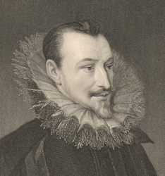

|
|
Home | Corson
Collection | Biography | Works | Image
Collection | Recent
Publications | Correspondence | Forthcoming
Events | Links | E-texts | Contact
James Thomson (1788-1850)
The portrait and figure engraver James Thomson (sometimes spelt
'Thompson') was born in May 1788 in Mitford, Northumberland. The
fourth son of a clergyman, he was articled to a London engraver,
Mackenzie of Margaret Street, Cavendish Square, in 1803. Having
served his apprenticeship, he worked under Anthony Cardon from
1810 to 1812, then set up in business on his own.
| Thomson developed a unique style
by laying preliminary etched design lines on his plate before
line or stipple engraving. His earliest work, for annuals such
as the Literary Souvenir, Keepsake, Book
of Gems, and Amulet, and journals like the European
Magazine, New Monthly Magazine, and Court
Journal, was mostly after sculptures by artists including
Chantrey, Flaxman, Wyon, and Westmacott. He turned subsequently
to engraving from paintings, working almost exclusively with
portraits. Constantly in demand, he contributed to many popular
illustrated works such as Walpole's Anecdotes of Painting (1827),
Fisher's National Portrait Gallery (1830-34), Edmond
Lodge's Portraits of Illustrious Personages of Great Britain (1835), A
Description of the Collection of Ancient Marbles in the British
Museum (1812-45), G.N. Wright's Gallery of Engravings (1844-46),
John Kitto's Gallery of Scripture Engravings (1846-49), The
Wilkie Gallery (1849), The Portrait Gallery of Distinguished
Poets (1853), and the Imperial Dictionary (ca.
1861). |

Click
on the thumbnail to see Thomson's engraving of
a portrait of Edmund Spenser
|
|
Thomson also produced larger-scale single prints, the best-known
being engravings of Queen Victoria after Sir Francis Grant, Prince
Albert after Sir William Charles Ross, Bishop Blomfield of London
after George Richmond, and King Louis-Philippe of France after
Edouard Debufe. He died of pulmonary consumption on 27 September
1850.
Thomson engraved four portraits of Scott: by William
Nicholson (1820), John Partridge (1823), Sir
Francis Chantrey (1831), and John Graham-Gilbert (1832). His only other
Scott-related commission appears to have been Portraits of
the Principal Female Characters in the Waverley Novels (1834),
for which he engraved Isabel Vere (The
Black Dwarf) and Lilias 'Green Mantle' Redgauntlet (Redgauntlet),
both after E.T. Parris, and Mary Queen of Scots (The
Abbot) after Federico Zuccaro. Click on the thumbnails
below to see full-size images of the portraits of Isabel Vere
and Lilias Redgauntlet.
Bibliography
- Bryan, Michael. Dictionary of Painters
and Engravers: Biographical and Critical. New ed., rev.
and enl., ed. Robert Edmund Graves (London: G. Bell, 1886-1889)
- Catalogue of Engraved British Portraits Preserved
in the Department of Prints and Drawings in the British Museum (London:
Printed by order of the Trustees, 1908-25)
- Dictionary of National Biography (London:
Oxford University Press, 1921)
- Engen, Rodney K. Dictionary of Victorian
Engravers, Print Publishers and their Works (Cambridge
: Chadwyck-Healey, c1979)
- Hunnisett, Basil. A Dictionary of British
Steel Engravers (Leigh-on-Sea: F. Lewis, 1980)
- Russell, Francis. Portraits
of Sir Walter Scott: A Study of Romantic Portraiture (London:
The Author, 1987)
Back to Index

Last updated: 7-June-2005
© Edinburgh University Library
|
|